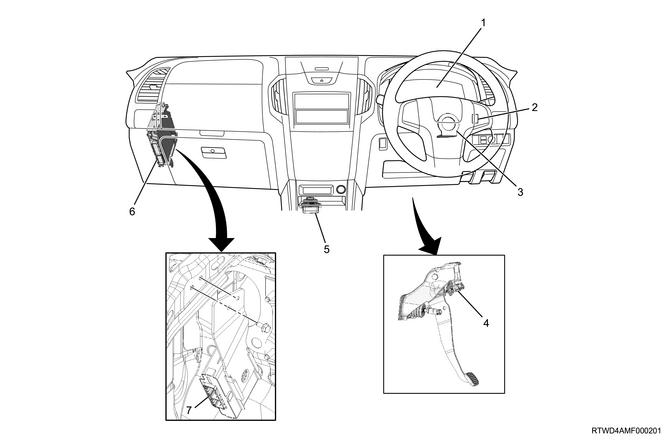
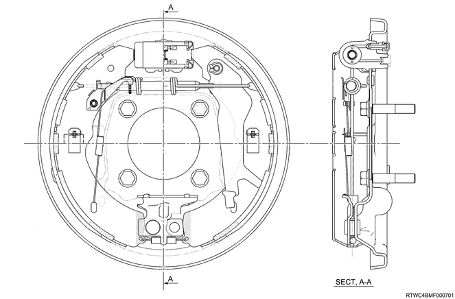

Function, structure, operation of brake (All models)
1. Function, structure, operation of brake
Outline of ABS/EBD/TCS/ESC
The ABS, TCS and EBD are systems that prevent wheel lock-up and slippage, and maintain stability and steerability when stopping or accelerating the vehicle.
If a system malfunction occurs, the fail-safe function activates to return the vehicle to a condition without ABS, TCS and EBD operation, and the warning light illuminates.
The ESC is a system that controls engine output and vehicle braking to stabilize the vehicle when sudden changes to the vehicle status are detected during operation, and also uses indication lights to draw the attention of the driver in such situations.
Each function of the brake control
| Running mode | Operation of the brake control function | |||
| ABS | EBD | TCS | ESC | |
| 2H (2WD) | ○ | ○ | ○ | ○ |
| 4H (4WD High) | ○ | ○ | ○ | ○ |
| 4L (4WD Low) | ○ | ○ | ○ | × |
Note
- When 4L (4WD Low) is selected for the running mode, the ESC is deactivated, and the ESC OFF indication light turns on.
Components
- EHCU
- Front wheel speed sensor
- Rear wheel speed sensor
EHCU
Master cylinder pressure sensor (Models equipped with ESC)
The EHCU detects brake fluid pressure from the master cylinder.
Electronic control unit
The electronic control unit processes signals from each sensor and outputs ABS control signals to the hydraulic unit.
Hydraulic unit
The hydraulic unit receives signals from the control unit and controls the brake fluid pressure for each of the 4 wheels.
Wheel speed sensor
The wheel speed sensor detects the vehicle speed for each of the 4 wheels.

- Instrument panel cluster
- ESC OFF switch (Models equipped with ESC)
- Steering angle sensor (Models equipped with ESC)
- Stoplight switch
- Yaw rate sensor (Models equipped with ESC)
- ECM
- TCCM
Instrument panel cluster
System operation status and malfunctions are displayed using the indication and warning lights in the instrument panel cluster.
ESC OFF switch (Models equipped with ESC)
Operation of the TCS and ESC are stopped by operating the ESC OFF switch.
Steering angle sensor (Models equipped with ESC)
The steering angle sensor detects the steering angle and steering direction of the vehicle steering.
Stoplight switch
The stoplight switch detects the operation status of the brakes.
Yaw rate sensor (Models equipped with ESC)
The yaw rate sensor detects the rotating angular speed and the front, rear, left and right accelerations of the vehicle.
ECM (Models equipped with ESC)
The ECM controls engine output control when the TCS and ESC are operating based on signals from the electronic control unit.
TCCM
The TCCM detects the status of the center differential Free-Lock.
Functions of ABS/EBD/TCS/ESC
ABS
The ABS appropriately controls the brake fluid pressure by retaining/reducing/increasing the brake fluid pressure while braking based on the signals from the wheel speed sensor using the EHCU.
The EHCU calculates the wheel speed, wheel acceleration/deceleration, and vehicle speed using signals from the wheel speed sensor. When the brake has been applied while the vehicle is being driven, and if the wheel speed is excessively decreasing in comparison with the vehicle speed, the system will determine that the wheels are destined to lock.
If it is determined that the wheels lock up in this condition, the brake fluid pressure will be decreased to prevent locking up. If the system determines that wheel locking has been avoided after this, it repeats retaining/increasing/decreasing the brake fluid pressure.
EBD
EBD is a system for appropriately controlling the front and rear braking force distribution according to the load movement due to deceleration and changes in the load state of the vehicle. The braking force distribution of the front wheels and rear wheels when braking is controlled by the EHCU.
The EHCU detects the amount the brake pedal is applied using signals from the master cylinder pressure sensor, and starts EBD control. When EBD control starts, the EHCU calculates the most suitable braking force for each wheel based on signals from each wheel speed sensor, and controls the hydraulic unit.
TCS function (Models equipped with ESC)
Excessive opening of the throttle at startup or acceleration on a slippery road surface may cause slippage of the driving wheel due to excessive torque, leading to impaired startup acceleration and maneuverability. TCS is a system that suppresses the slippage of driving wheels by means of brake oil pressure control and driving force control of the driving wheels and generates driving force corresponding to the road surface to ensure vehicle's startup acceleration, ability to hold a straight line and turning stability.
ESC (Models equipped with ESC)
The ESC ensures the stability of vehicle's turning direction.
Due to unexpected circumstances or external factors such as road conditions, vehicle speed, or sudden sharp turns in the case of an emergency, oversteering (strong side skidding of rear wheels) or understeer (side skidding of front wheels) may occur. When the ESC detects such conditions, it mitigates the strong side skid of the rear or front wheels by controlling the brake oil pressure and driving force of each wheel to ensure stability.
Caution
- When 4L (4WD Low) is selected as the running mode, the ESC does not operate.
ESC control
The ESC detects vehicle conditions based on signals from various sensors including the yaw rate sensor at vehicle speeds of 15 km/h (9 mph) or higher, and controls the brake oil pressure and engine output.
ESC operation
In case of oversteerWhen the electronic control unit detects oversteering, it applies braking force to the wheels at the outer side of the turn and to the rear wheel at the inner side in accordance with the degree of the oversteer to generate stabilization moment toward the outer side of turn and to repress the side skid of the rear wheels in order to return the vehicle to a neutral steering state.
In case of understeer
When the electronic control unit detects understeering, it represses the driving force and applies braking force to the front and rear wheels in accordance with the degree of the understeer to generate stabilization moment toward the turning direction and then represses the side skid of the front wheels to return the vehicle to neutral steering state.
Rolling prevention function

When large lateral acceleration on the vehicle is generated and the vehicle becomes unstable as the gradient angle of the vehicle becomes large, this function alerts the driver and represses the engine output. It also determines whether or not to operate the brake depending on the magnitude of the detected lateral acceleration and applies the necessary braking force to each wheel.
Wheel speed sensor
- Wheel speed sensor
- Sensor rotor
The wheel speed sensors are Hall-effect IC sensors that generate pulses based on the rotations of the sensor rotors that are press-fitted to the axle shaft. The frequency of these pulses change proportionately to the rotor speed, thereby enabling the wheel speed to be detected.
Yaw rate sensor (Models equipped with ESC)
- G sensor
- Yaw rate sensor
- Yaw rate sensor assembly
The solid state yaw rate sensor and G sensor are integrated and placed beneath the center of the instrument panel to detect the rotating angular speed and deceleration speed.
The yaw rate sensor detects capacitance changes at the sensor part caused by rotations in the vertical axis direction of the vehicle as vehicle's rotating angular speed (yaw rate). An exclusive IC is employed for vibrating the sensor unit and processing signals to ensure reliability together with miniaturization.
As for the G sensors, the capacitance at the sensor part changes when the vehicle speed is decelerated and this change is measured and replaced with electric signals. The 2 G sensors are installed at an angle of 45° in the direction of the front and rear of the vehicle and detect any deceleration in the horizontal direction.
Steering angle sensor (Models equipped with ESC)
- Detection gear
The steering angle sensor is placed in the steering column part to detect the steering angle and steering direction.
The sensor section is equipped with 2 sets of magnetic resistance elements that detect the rotations of the magnets embedded in the detection gears. Changes in magnetic resistance when the detection gears rotate are detected as steering rotations.
Warning light/indicator light
- ESC warning light (Models equipped with ESC)
- ABS warning light
- Brake system warning light
ESC warning light (Models equipped with ESC)
The ESC warning light illuminates for 3 seconds after the ignition switch is turned ON.
It flashes when the TCS and ESC operate.
It illuminates when there is a malfunction in the ESC.
ABS warning light
The ABS warning light illuminates for 3 seconds after the ignition switch is turned ON.
It illuminates when there is a malfunction in the ABS.
It displays DTCs by flashing when in self-diagnosis mode.
Brake system warning light
Illuminates for 3 seconds when the ignition switch is turned ON.
Illuminates when normal brake performance may be impaired due to a failure in the EHCU, etc.
Illuminates when the brake fluid level is lowered.
Illuminates in case of charging system failure.
Illuminates in case of EBD function failure.
Illuminates when the parking brake is not released.
ESC OFF switch (Models equipped with ESC)
- TCS OFF indicator light
- ESC OFF indicator light
- ESC OFF switch
When attempting to remove the vehicle from mud, it may be difficult to remove the vehicle even by depressing the accelerator pedal due to driving force being limited by TCS or ESC operation. The TCS and ESC can be deactivated by operating the ESC OFF switch.
When 2H (2WD) or 4H (4WD High) is selected for the driving mode
･Pushing the ESC OFF switch will briefly switches the TCS to TCS OFF mode, deactivating the TCS. Also, the TCS OFF indication light in the instrument panel cluster illuminates at this time.
･Pressing and holding the ESC OFF switch for about 5 seconds or more with the vehicle stopped switches the ESC to ESC OFF mode, deactivating the TCS and ESC. Also, the TCS OFF indicator light and ESC OFF indicator light in the instrument panel cluster illuminate at this time.
･Each mode can be canceled by pushing the ESC OFF switch briefly or turning the ignition switch OFF.
When 4L (4WD Low) is selected for the driving mode
･Pressing and holding the ESC OFF switch for about 5 seconds or more with the vehicle stopped switches the TSC to TSC OFF mode, deactivating the TCS. Also, the TCS OFF indication light in the instrument panel cluster illuminates at this time.
･The TCS OFF mode can be canceled by pushing the ESC OFF switch briefly or turning the ignition switch OFF.
Note
- When the ESC OFF switch is pressed and held for 10 seconds or more, it returns to normal mode.
| Running mode | Operation | Control allowed/prohibited | Indication light | ||||
| Engine TCS | Brake TCS | Engine ESC | Brake ESC | TCS OFF | ESC OFF | ||
| 2H (2WD), 4H (4WD High) | No | ○ | ○ | ○ | ○ | Turning off | Turning off |
| Short press | × | ○ | ○ | ○ | Lighting | Turning off | |
| Long press (5 seconds or longer) | × | × | × | × | Lighting | Lighting | |
| 4L (4WD Low) | No | × | ○ | × | × | Turning off | Lighting |
| Short press | × | ○ | × | × | Turning off | Lighting | |
| Long press (5 seconds or longer) | × | × | × | × | Lighting | Lighting | |
EHCU
The EHCU consists of the control unit section and the hydraulic unit section. The control unit is comprised of an ABS/EBD control part, ABS/EBD/TCS control part (with ESC), malfunction detection part, and failsafe part. It drives the hydraulic unit based on signals from the various sensors. The system has a function that stops each control by way of a fail-safe function that returns to regular braking when a malfunction occurs in the system. It also has a self-diagnosing function which displays the defective areas when performing trouble diagnosis.
The hydraulic unit comprises the motor, the plunger pump, the gear pump (models with ESC), the master cylinder pressure sensor (models with ESC), and the solenoid valves.
Except models equipped with ESC
Models equipped with ESC
- Hydraulic unit section
- Electronic control unit section
EHCU operation
Hydraulic circuits diagram (Except models equipped with ESC)
- Front left hold solenoid valve
- Front right hold solenoid valve
- Master cylinder pressure sensor
- Motor
- Rear release solenoid valve
- Rear hold solenoid valve
- Rear brake
- Reservoir
- Pump
- Front right release solenoid valve
- Front left release solenoid valve
- Front right brake
- Front left brake
Hold solenoid valve, Release solenoid valve
Based on control signals from the electronic control unit, the hold solenoid valve and release solenoid valve are operated, and the brake hydraulic circuit is switched between Hold mode, Pressure reduction mode, and Pressure increase mode.
ABS/EBD operation (Except models equipped with ESC)
Normal braking

During normal braking, current does not flow through the solenoid valve, and the hold solenoid valve is opened, while the release solenoid valve is closed. Brake fluid pressure passes through the hold solenoid valve, and is then delivered to the brake piston and wheel cylinder.
Hold mode
When a sudden deceleration is determined based on wheel speed, the hold solenoid valve and release solenoid valve will close, and the pressure of the brake piston and wheel cylinder will be held in preparation for the pressure reduction mode that will occur when the wheels lock.
Pressure reduction mode
When wheel lock is detected, the hold solenoid valve closes, the release solenoid valve opens, and the brake fluid pressure of the brake piston or wheel cylinder that was being retained decreases by a part of the fluid being returned to the reservoir.
Pressure increase mode
Once the wheel speed begins to increase again, pressure will also begin to increase again until the optimal hydraulic pressure is reached. The release solenoid valve closes, the hold solenoid valve opens, and the brake fluid pressure that is taken in and discharged by the pump motor, as well as the fluid pressure from the master cylinder, is sent to the brake piston or wheel cylinder. At this time, the driver may feel a slight pulsation in the pedal, but this is not a malfunction. If the wheel is likely to lock again with this pressure increase, the EHCU will again increase, hold, or decrease the brake fluid pressure. This cycle is extremely short and is repeated much faster, more often, and more accurately than pumping the pedal.
Operation description
| Valve operation status | Non-control | ABS control | ||
| Pressure increase mode | Hold mode | Pressure reduction mode | ||
| Hold solenoid valve | Off (open) | Off (pressure adjustment) | On (closed) | On (closed) |
| Release solenoid valve | OFF (closed) | OFF (closed) | OFF (closed) | ON (open) |
Hydraulic circuits diagram (Models equipped with ESC)
- Front left hold solenoid valve
- Master cylinder cut valve 1
- Front right hold solenoid valve
- Damper chamber
- Master cylinder pressure sensor
- Master cylinder
- Motor
- Rear left release solenoid valve
- Rear left hold solenoid valve
- Master cylinder cut valve 2
- Rear right hold solenoid valve
- Rear right release solenoid valve
- Rear right brake
- Rear left brake
- Reservoir
- Pump
- Front right release solenoid valve
- Front left release solenoid valve
- Front right brake
- Front left brake
Hold solenoid valve, Release solenoid valve
Based on control signals from the electronic control unit, the hold solenoid valve and release solenoid valve are operated, and the brake hydraulic circuit is switched between Hold mode, Pressure reduction mode, and Pressure increase mode.
Master cylinder cut valve
The opening and closing of the master cylinder cut valve is controlled to adjust the hydraulic pressure generated in the pump in accordance with operational conditions.
Master cylinder pressure sensor
The master cylinder pressure sensor is integrated into the hydraulic unit section and outputs master cylinder pressure signals to the electronic control unit.
ABS/EBD operation (Models equipped with ESC)
Normal braking
During normal braking operations, the solenoid valves are not energized, and the master cylinder cut valve and the hold solenoid are open while the release solenoid valve is closed. Brake fluid pressure passes through the hold solenoid valve, and is then delivered to the brake piston and wheel cylinder.
Hold mode
When a sudden deceleration is determined based on wheel speed, the hold solenoid valve and release solenoid valve will close, and the pressure of the brake piston and wheel cylinder will be held in preparation for the pressure reduction mode that will occur when the wheels lock.
Pressure reduction mode
When wheel lock is detected, the hold solenoid valve closes, the release solenoid valve opens, and the brake fluid pressure of the brake piston and wheel cylinder that was being retained decreases by a part of the fluid being returned to the reservoir.
Pressure increase mode
When the wheel speed increases again and an increase in brake fluid pressure is necessary, brake fluid pressure from the master cylinder is discharged from the pump motor to increase the fluid pressure. The amount of pressure is adjusted through the current control of the master cylinder cut valve.
Operation description
| Valve operation status | Non-control | ABS control | ||
| Pressure increase mode | Hold mode | Pressure reduction mode | ||
| Master cylinder cut valve 1 | Off (open) | Off (open) | Off (open) | Off (open) |
| Master cylinder cut valve 2 | Off (open) | Off (open) | Off (open) | Off (open) |
| Hold solenoid valve | Off (open) | Off (pressure adjustment) | On (closed) | On (closed) |
| Release solenoid valve | OFF (closed) | OFF (closed) | OFF (closed) | ON (open) |
TCS operation (Models equipped with ESC)
2WD
4WD
The TCS control applies the brake by leading hydraulic pressure generated in the pump in the hydraulic unit into the wheel cylinder of the driving wheel and prevents slippage of the vehicle wheel due to driving force.
| Valve operation status | Non-control | TCS control | |||
| Pressure increase mode | Hold mode | Pressure reduction mode | |||
| Master cylinder cut valve 1 | Off (open) | On (pressure adjustment) | On (pressure adjustment) | On (pressure adjustment) | |
| Master cylinder cut valve 2 | Off (open) | On (pressure adjustment) | On (pressure adjustment) | On (pressure adjustment) | |
| MAX oil pressure wheel for 2-wheel control in the same system, or control wheel for 1-wheel control in the same system | Hold solenoid valve | Off (open) | Off (open) | Off (open) | Off (open) |
| Release solenoid valve | OFF (closed) | OFF (closed) | OFF (closed) | OFF (closed) | |
| MIN oil pressure wheel for 2-wheel control in the same system | Hold solenoid valve | Off (open) | Off (open) | On (closed) | On (closed) |
| Release solenoid valve | OFF (closed) | OFF (closed) | OFF (closed) | ON (open) | |
| Non-control wheel | Hold solenoid valve | Off (open) | On (closed) | On (closed) | On (closed) |
| Release solenoid valve | OFF (closed) | OFF (closed) | OFF (closed) | OFF (closed) | |
ESC operation
In case of oversteer
The brakes are operated by the hydraulic pressure generated by the pump inside the hydraulic unit being guided into the wheel cylinder of each wheel, controlling the side skidding of the rear wheels.
In case of the over steer, the brakes at the front and rear wheels on the outside of the turn are activated.
In case of understeer
The brakes are operated by the hydraulic pressure generated by the pump inside the hydraulic unit being guided into the wheel cylinder of each wheel, controlling the side skidding of the front wheels.
In the case of understeer, the brakes of both rear wheels, or if necessary, the brakes of the front wheel outside of the turn are activated.
As an example, the illustration shows the front left/right brakes and the rear left brake as the controlled wheels, with the rear left brake as the uncontrolled wheel.
Operation description
| Valve operation status | ESC control | ||||
| Pressure increase mode | Hold mode | Pressure reduction mode | |||
| Control system | Master cylinder cut valve | On (closed) | On (closed) | On (closed) | |
| Control wheel | Hold solenoid valve | Off (open) | On (closed) | On (closed) | |
| Release solenoid valve | OFF (closed) | OFF (closed) | ON (open) | ||
| Control wheel | Hold solenoid valve | Off (open) | On (closed) | On (closed) | |
| Release solenoid valve | OFF (closed) | OFF (closed) | ON (open) | ||
| Control system(diagonal wheels) | Master cylinder cut valve | On (closed) | On (closed) | On (closed) | |
| Control wheel | Hold solenoid valve | Off (open) | On (closed) | On (closed) | |
| Release solenoid valve | OFF (closed) | OFF (closed) | ON (open) | ||
| Non-control wheel | Hold solenoid valve | On (closed) | On (closed) | On (closed) | |
| Release solenoid valve | ON (open) | ON (open) | ON (open) | ||
General circuit diagram
Except models equipped with ESC
| No. | Pin function | No. | Pin function |
| 1 | Ground (solenoid valve) | 18 | Wheel speed sensor front left signal |
| 2 | Not used | 19 | Wheel speed sensor front left 12 volts reference |
| 3 | Not used | 20 | Not used |
| 4 | Wheel speed sensor rear left signal | 21 | Not used |
| 5 | Wheel speed sensor rear left 12 volts reference | 22 | Vehicle speed signal output |
| 6 | Wheel speed sensor front right signal | 23 | Not used |
| 7 | Wheel speed sensor front right 12 volts reference | 24 | Battery voltage (motor) |
| 8 | Not used | 25 | CAN high signal |
| 9 | Not used | 26 | Not used |
| 10 | Not used | 27 | Not used |
| 11 | Not used | 28 | Brake switch signal |
| 12 | Battery voltage (solenoid valve) | 29 | Not used |
| 13 | Ground (motor) | 30 | Not used |
| 14 | CAN low signal | 31 | Not used |
| 15 | Not used | 32 | Diagnostic request switch |
| 16 | Wheel speed sensor rear right signal | 33 | Not used |
| 17 | Wheel speed sensor rear right 12 volts reference | 34 | Ignition voltage |
Models equipped with ESC
| No. | Pin function | No. | Pin function |
| 1 | Ground (solenoid valve) | 18 | Wheel speed sensor front left signal |
| 2 | Brake switch signal | 19 | Wheel speed sensor front left 12 volts reference |
| 3 | CAN low 2 signal (local) | 20 | Not used |
| 4 | Wheel speed sensor rear left signal | 21 | Not used |
| 5 | Wheel speed sensor rear left 12 volts reference | 22 | Not used |
| 6 | Wheel speed sensor front right signal | 23 | Not used |
| 7 | Wheel speed sensor front right 12 volts reference | 24 | Battery voltage (motor) |
| 8 | Not used | 25 | CAN high signal |
| 9 | Not used | 26 | Not used |
| 10 | Not used | 27 | Not used |
| 11 | Vehicle speed signal output | 28 | Not used |
| 12 | Battery voltage (solenoid valve) | 29 | Not used |
| 13 | Ground (motor) | 30 | ESC OFF switch signal |
| 14 | CAN low signal | 31 | Not used |
| 15 | CAN high 2 signal (local) | 32 | Not used |
| 16 | Wheel speed sensor rear right signal | 33 | Diagnostic request switch |
| 17 | Wheel speed sensor rear right 12 volts reference | 34 | Ignition voltage |
Note
- Front disc brake
Note
- Rear disc brake
Note
- Rear drum brake

Note
- Rear wheel cylinder
Note
- Blend proportioning valve
Note
- Brake piping diagram
- With blend proportioning valve
Note
- With ABS
Note
- With ESC
Note
- Vacuum servo with master cylinder
Note
- Vacuum hose
Caution
- When attaching the vacuum hose, make sure the arrow painted on the hose is pointing to the engine side.

- Engine side
- Check valve

Structure of the blend proportioning valve
For bypass valve, seal the routes 1 and 2 and use a seal to the piston end. The spring is pressed against the piston and spring seal is pressed against the cylinder end surface in order to effectively seal the routes 1 and 2.
Operation of the blend proportioning valve
P-valve operation by the master cylinder pressure does not change up to the first and second brake points. When the master cylinder fluid pressure reaches to the second brake point, the fluid pressure compress the seal (which branches into the routes 1 and 2) and goes through the rout 1 on the master cylinder side. Then it overcomes spring operational force and fluid pressure, and affects the wheel cylinder seal. The piston is pressed to the right and it consequently opens up the routes 1 and 2 to cancel the P-valve operation. Next, the master cylinder fluid pressure and wheel cylinder fluid pressure affect the same surface of the seal up to the point C and therefore they are decreased at the same rate. However, due to the act of spring on the wheel cylinder side, the wheel cylinder fluid pressure maintains balance with the lower master cylinder fluid pressure with the pressure difference caused by this spring.
- Route 1
- From the master cylinder
- Seal
- Piston
- To the wheel cylinder
- Route 2
- Bypass valve
- Spring
- P-valve
Note
- Characteristic curves
- The first brake point
- The second brake point
- Point C
Note
- If there is any fluid leakage or other failure, replace the defective blend proportioning valve.
The blend proportioning valve is installed in the engine room.
Caution
- Blend proportioning valve cannot be repaired and must be replaced as a complete assembly.